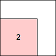

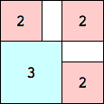 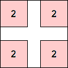
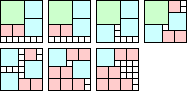
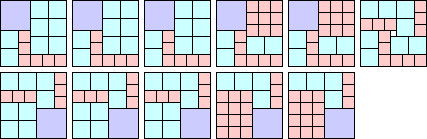
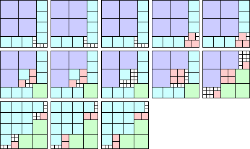
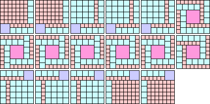
9(1) 8(2) 6(3) 5(5) 4(8) 3(33) 2(50) 1(84)
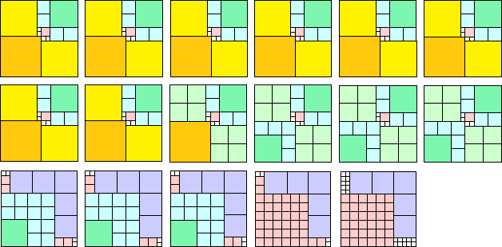
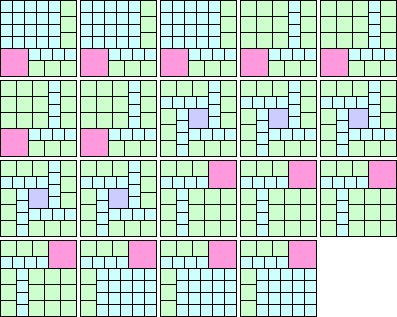
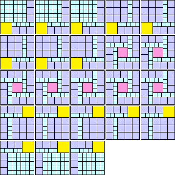
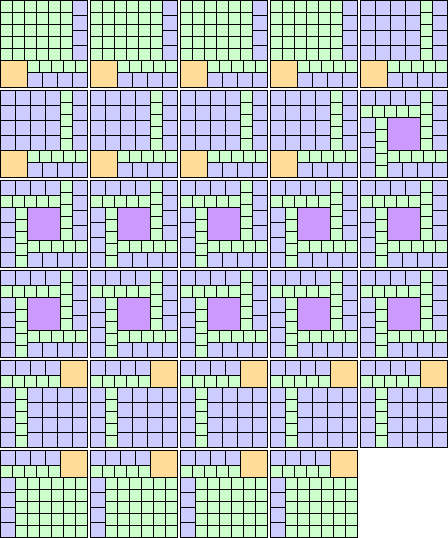
g(n) = the smallest number of cubes
h(n) = the smallest possible value of the largest multiplicity of cubes needed
When n is composite with smallest prime factor p, it appears that f(n) = n/p f(p) and g(n) = g(p). Can you find counter-examples? Thus we mostly concern ourselves with finding the values of f(n) and g(n) for n prime.
Can you beat the best known tilings below?
In particular, what is the smallest n for which f(n) = k? How fast does g(n) grow? What is the smallest n for which different packings are needed to illustrate f(n) and g(n)? What is limn→∞ h(n) ? It is known that no n has h(n)=1. Are there n for which h(n)=2?
And a meta-question: what is the best way to visualize complicated cube packings?
Here are the best known values for f(n) and g(n), the cubes needed for that tiling, and top and bottom views (with the unit squares omitted):
| n | f(n) | g(n) |
|---|---|---|
| 2 | 1 | 8 |
| 1(8)
| ||
| 3 | 1 | 20 |
| 2(1) 1(19) 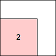
| ||
| 5 | 1 | 50 |
| 3(1) 2(7) 1(42) 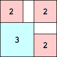 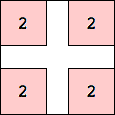 | ||
| 7 | 1 | 66 (George Sicherman) |
| 4(1) 3(5) 2(12) 1(48) 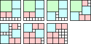 | ||
| 11 | 1 | 81 (George Sicherman) |
| 5(2) 3(24) 2(54) 1(1) 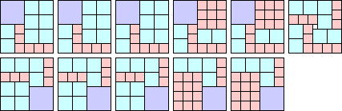 | ||
| 13 | 1 | 159 (Maurizio Morandi) |
| 5(7) 4(4) 3(31) 2(16) 1(101) 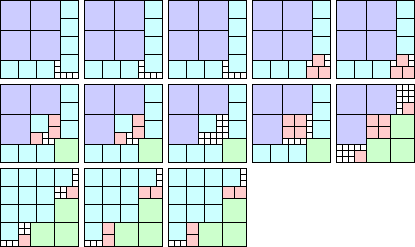 | ||
| 17 | 2 (George Sicherman) | 186 (Maurizio Morandi) |
| 7(1) 5(2) 3(96) 2(216) 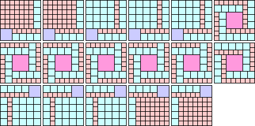 9(1) 8(2) 6(3) 5(5) 4(8) 3(33) 2(50) 1(84) | ||
| 19 | 3 (George Sicherman) | 153 (George Sicherman) |
| 7(2) 5(1) 4(54) 3(96) 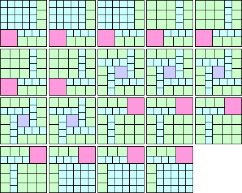 | ||
| 23 | 3 (George Sicherman) | 207 (Maurizio Morandi) |
| 8(2) 7(1) 5(54) 3(150) 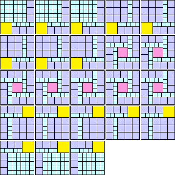 | ||
| 29 | 4 (George Sicherman) | 249 (George Sicherman) |
| 11(1) 9(2) 5(96) 4(150) 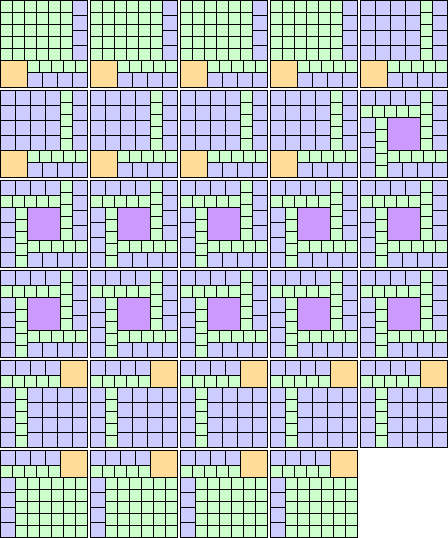 | ||
Bryce Herdt also showed f(41)≥3, f(71)≥4, and f(97)≥5.
Brian Trial showed f(137)≥7, f(223)≥9, f(263)≥11, f(359)≥12, f(373)≥13, and f(409)≥15.
Here are the best known values for h(n), and the cubes needed for that tiling:
| n | h(n) | Cubes |
|---|---|---|
| 2 | 8 | 1(8) |
| 3 | 19 | 2(1) 1(19) |
| 4 | 8 | 2(8) |
| 5 | 42 | 3(1) 2(7) 1(42) |
| 6 | 8 | 3(8) |
| 7 | 40 | 3(5) 2(21) 1(40) 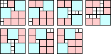 (George Sicherman) |
| 8 | 8 | 4(8) |
| 9 | 19 | 6(1) 3(19) (Bryce Herdt) |
| 10 | 8 | 5(8) |
| 11 | 39 | 6(1) 5(3) 3(15) 2(37) 1(39) 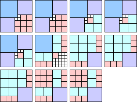 (George Sicherman) |
| 12 | 8 | 6(8) |
If you can extend any of these results, please e-mail me. Click here to go back to Math Magic. Last updated 3/2/15.